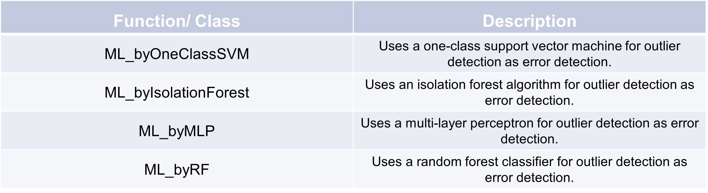

Machine learning error detection
Outliers are data points that deviate significantly from the majority of observations in a dataset. They can arise due to variability in the data, errors, or novel phenomena. Machine learning offers powerful techniques to identify these anomalies, ensuring data integrity and enhancing decision-making processes. Proper handling of outliers leads to improved data quality and more reliable analytical outcomes, paving the way for better decision-making.
We use for each of the following examples the same small dataframes, so you see immediately differences between all of them. The first dataframe only includes one column without any dates and the second one got an extra datetime column.
First dataframe
>>> d = {'col1': [1, 9, 3, 6, 20]}
>>> df = pd.DataFrame(data=d)
col1
0 1
1 9
2 3
3 6
4 20
Second dataframe
>>> dates = np.arange('2021-07-24 00:00:00', '2021-07-24 05:00:00', dtype='datetime64[h]')
>>> d = {'col1': [1, 9, 3, 6, 20]}
>>> df_time = pd.DataFrame(data=d, index=dates)
col1
2021-07-24 00:00:00 1
2021-07-24 01:00:00 9
2021-07-24 02:00:00 3
2021-07-24 03:00:00 6
2021-07-24 04:00:00 20
Isolation Forest
An Isolation Forest is a machine learning algorithm designed for anomaly detection. It operates on the principle of isolation, differing from other anomaly detection methods by attempting to isolate outliers instead of modeling the behavior of normal data points.
The main goal of an Isolation Forest is to separate anomalies (outliers) from the normal data points.
It achieves this by repeatedly randomly partitioning the data, based on the assumption
that anomalies are few and distinct, making them easier to isolate.
Here’s an example of how to use the ML_byIsolationForest class:
>>> import pandas as pd
>>> class_instance = TSCC.detection.ML_byIsolationForest(n_estimators=100)
>>> class_instance.fit(df_time, None, None)
>>> class_instance.predict(df_time)
2021-07-24 00:00:00 0.0
2021-07-24 01:00:00 0.0
2021-07-24 02:00:00 0.0
2021-07-24 03:00:00 0.0
2021-07-24 04:00:00 1.0
Name: isError, dtype: float64
As you see the fifth datapoint is marked as an outlier with value ‘1.0’. With the parameter ‘n_estimators’ when intializing the class instance, you can choose the number of estimators in your Isolation Forest ensemble. More estimators help to reduce the variance of the model. This means the model becomes less sensitive to random fluctuations in the training data, increasing the stability and reliability of anomaly detection.